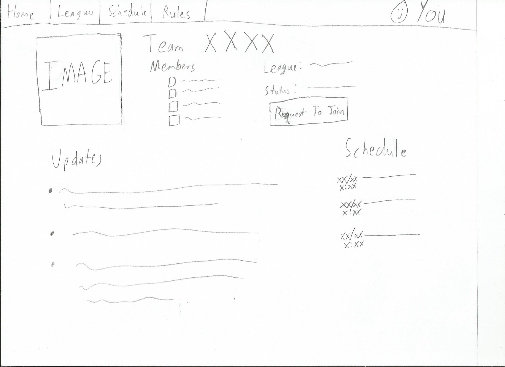
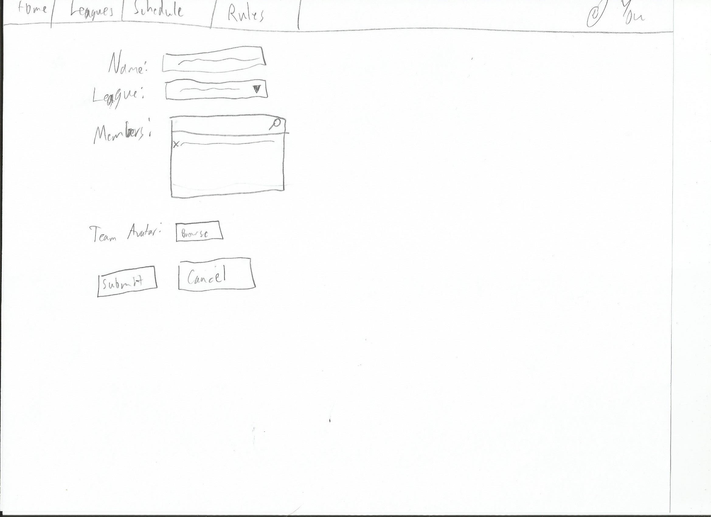
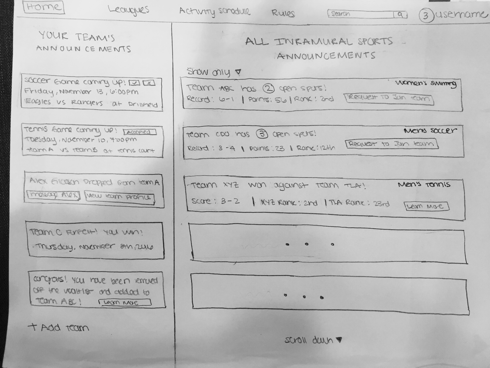

Problem Statement: Intramural sport teams at Virginia Tech often struggle with getting enough players to be eligible for competition.
Purpose: Fun activity to get people together and create a community.
Current problems:
Time commitment.
Lack of motivation beyond fun.
Frustration from other teams forfeiting.
No way to easily to join teams without having friends in the community.
Points received for forfeits(0) are the same as a loss(0).
How it is handled currently(Status-Quo):
Time commitment is dealt within teams through personal group chats.
Motivation is meant to be for having fun
Key Questions and Observations:
(1)Intramural Sport Teams at VT: https://www.recsports.vt.edu/intramurals/sports
(2)Eligibility Requirements for competition: Be a part of the team and agree to show up to competitions.
(3)Have teams struggled with not having enough players to make a team in order to compete? : According to team captains for Soccer, they seem to have a lot of players not show up to competitions due to other requirements(such as school work) and sometimes they just drop out in the middle of the semester.
(4)What’s the difference between being eligible for competition vs being eligible to join the team? : Everyone is eligible for team and competition as long as they’re on the team.
(5)What are the problems players are facing in order to be eligible? Is it lack of time commitment? Are the requirements too strict? : Lack of time
(6)What do other schools do and what are their requirements? : Other schools have a similar system but charge more money. For example, Harvard charges 150 dollars per team.
Why don’t people want to be a part of the team? Time commitments, $20 intramural fee, You don’t want to play something alone--getting friends to be a part of it with you
Potential Ideas:
(1)Change the point system: Currently, the point system is 1 for a win and 0 for a loss and forfeit. However, the point system should change to a -1 for forfeit because then there’s a penalty for forfeiting which allows players to be careful about making such decisions.
(2)Increase the intramural fee: $20 is too low, if you player pay more they more likely to attend all the competitions.
(3)Attendance Penalty: Have a penalty for not attending games and not allowing eligibility for joining teams in the future.
(4)Online Community: Currently, there’s no place for teams to know if the competing team is going to forfeit(this is only figured out by showing up to the competition and realizing that the other team as forfeited or if you have internal contacts and know the other captains) or to see if teams need more players and keep an update of which team members are quitting, etc. An online community would solve these problems.
Final Idea: Online community(website) that enforces a strict point system.
The online community fixes the problem of communication between teams and allows for members and students to be more aware of recreational sport events. It also allows a simple place to view team and player profiles and see which teams and players have a history of forfeiting or which ones attend all the competitions. Although there is no attendance penalty, it feels like one because the community can see your actions and you get rated and judged on these actions. Also, increasing the intramural sports fee does not seem like a good option because the purpose of it is not to make it expensive and rather to make it fun and build an environment of family and a community. However, in order to fix the problem of forfeits, there should be a penalty for forfeits such as receiving a score of “-1” that shows up on your overall score and affects your ranking and this can be seen on the online community site.
Functionalities:
Login/Logout Page
User Profile
Team(s) - Status [Active, Inactive, Waitlisted]
League(s)
Position(s)
Calendar (game events)
Karma
Positive for showing up, completing seasons, good sportsmanship
Negative for missing games, poor sportsmanship
Team Profile
Active Team
Team Creation
List of members
Inactive Team
Game Schedule
Dashboard
Open Teams
Community Announcements
Messaging Systems
Make Payments
Requesting to be on a team
Can be waitlisted w/ a #
Added to a team
Notifications for certain requests
Design
Process
The process for developing our designs to use in the prototyping phase of the project involved analyzing the data collected regarding the problem, as well as brainstorming the features and layout of a system which would address these needs. All team members gathered around a table with access to a whiteboard. First, we decided on the medium for which our prototype would take. This was done by considering a list of brainstormed possibilities and then selecting each based on pros and cons.
After we decided on the form our prototype would take, we moved onto constructing a shared layout of the system. We decided that the visual design of the solution should be consistent throughout the user’s interaction with it. This would facilitate the user’s ability to identify where they are and where they can go at any moment in time. To design this portion, we sketched out a skeleton on the whiteboard to represent the shared layout of each part of the system. Every team member offered input, critique, concerns, and each had the opportunity to take the marker for themselves to adjust the design with their own input. This led to a refined final shared visual design for our prototype.
From here, we began to design the implementation of the features in the system. We designed the major pieces in the order that they would typically interact with the system. Beginning with the first part that the user sees, and moving forward to each individual portion as our research dictated is the most common path taken by a user. Each section was designed nearly in whole before moving on to the next one. As our design of later portions of the system emerged, so too did our earlier designs evolve to fit adjustments and requirements. This portion of the process was overseen by the Design Lead, who made sure each team member got their fair share of input and kept everyone focused.
After the major features were created together by the team, we split the remaining portions up for each team member to design on their own. At this point, each of us was comfortable and familiar enough with our goals for the design and the language we were using in creating prototyping step of the lifecycle.
Description and Rationale
The final design we would use for our prototype took the form of low-fidelity sketches of a web-based system that would allow students at Virginia Tech to find, form, and participate in intramural sports teams. After understanding that the problem arose from a lack of ability for potential players to find teams, as well as team members missing games without replacements being available, we decided that this would fit the needs of students best. The site would take the form of a social networking site, instantly adding a sense of familiarity for students, easing its adoption and learning curve.
The system consists primarily of profiles for students registered to play. It includes the ability for students to register as a player and pay the intramural fee. Students can form teams, inviting other players to be on that team. Each team has one captain, who is responsible for the team’s information. Team captains can manage rosters, and replace players if they prove unable to continue competing or must be removed for reasons such as continued tardiness or lack of attendance. This provides incentives for players to continue playing. Each team is connected to a league, as is the case for Virginia Tech’s intramural system. Each league is a sport and a gender classification (men’s, women’s, and co-ed). Each player may only be on one team per league and only for their respective gender. This is to keep our system in compliance with the design of Virginia Tech’s intramural leagues as identified in our research.
The main design issue we faced to tackle the problem was how to handle players not showing up to events. To do this, we added features to our design which add multiple stages in the process that make it easier for team captains to ensure their team will have the minimum number of players at each of their events. First is reminding players of upcoming events so that they do not forget about them. This is done via mobile notifications and text messages, as well as a notification indicator in the system itself. The addition of mobile notifications removes the need for players to consistently monitor the system. These notifications also carry an action, and users may respond in the affirmative or negative. An affirmative notification will “lock” that player into the game, and the team will be notified that they will attend. A negative response will trigger actions for the team captain to complete to replace that player for the game.
Another feature devised to address the problem is the ability for teams to have a waitlist. Any player may request to be placed on this waitlist from the application, and team captains may approve or deny these requests. Approvals will place players on an inactive roster. They will not be required to go to games unless “called up” by team captains in the case of a player on the active roster being unable to make the game due to a scheduling conflict. If a player does not show up to a game after an affirmative response to attendance or must change their attendance due to unforeseen circumstances, team captains can quickly access waitlisted members through the application and attempt to activate a player off the waitlist. This gives multiple layers of protection, allowing team captains to have a pool of players willing to play for them at any moment. This ensures higher rates of eligible teams.
The final portion of the system intended to improve player attendance is the addition of a “karma” or “reputation” system. Players will receive a positive scoring upon completion of games, seasons, and good reviews for sportsmanship. Players will receive a negative score for unexcused absences, tardiness, and poor sportsmanship. Teams and captains can use this score and its related feedback to examine a player’s history. When approving players for competition, this information can be taken into consideration. This provides an incentive for players to attend their scheduled events, as well as play in a manner consistent with the values promoted by Virginia Tech intramurals. It also filters out players who continually do not show up to their games, which is the root cause of the problem.
Prototyping
The following are snapshot displays of webpages for an online Intramural community.
This is a sketch of what the profile page would look like for an individual user. There is also a description of how notifiactions would be administered depending on the user level (player versus captain versus waitlist)
This is a sketch of a team's profile page. This will be interactive for the entire team, but direct account edits would be accessible only for the captain.

This is what the page would look like for when a captain is creating a team page

To view a schedule, the user will be able to apply filters by sports and by gender. This filter will be applied to the calendar view, which will display schedules accordingly. Default will display all sports
This is the calendar view. The calendar will display all practices and games schedueled on their given dates. There will also be editing functionality (such as forfeiting a game) in this GUI.
The login page is the same as the home page for a user that is not logged in or for a first-time user. The page will display a login option or a create account option. Underneath will display the general information on intramural sports.

Prototype evaluation
In evaluating our prototype, we used two different evaluation methods. The first was a brief user study, describing the intended flow of the system and trying to foresee any potential issues. Second, we employed a heuristic evaluation on our prototype.
User study
The user study was conducted with a 21-year-old male. The following information was presented to the user:
“Virginia Tech intramural sports face large issues with getting enough players for competition. It is a common problem that teams forfeit because they are unable to meet the minimum requirement for a team on a game day. Our solution to that problem is an online community supporting the intramural leagues that provides players with the following:
‘On the homepage you can read about the intramural leagues and obtain all the information you need to know about things like what sports are available or how to sign up. The leagues page provides players with the ability to see how different teams are doing in specific leagues, like women’s soccer or co-ed badminton. Logically, the schedules page allows players to see what games are coming up for their teams. We also have a profile page for each player so they can see their statistics in previous leagues and earn karma for showing up to and performing well in games. Most importantly, this online community allows teams to notify their opponents ahead of time if they do not anticipate to have enough players and forfeit. It also gives these teams the opportunity to connect with players on the waitlist and add them to their team to meet the competition threshold.’”
Comments from the user were:
It may be useful to have a membership tab in the navigation bar for your teams
Capability to send a message to everyone in the team (could be something like a message board, forum, or send out emails)
The news feed/announcements page may be too crowded and overwhelming
Notifications are long and may be confusing
Heuristic evaluation:
A heuristic evaluation was employed for the prototype. The following heuristics were used:
Match between system and the real world: The information on the website speaks the users’ language. Notifications clearly inform the user what they need to know.
User control and freedom: On every page there is a navigation bar at the top, a clear “emergency exit” if the user ends up in an unwanted state. This provides the user with additional control and increased awareness of their location in the website at all times.
Aesthetic and minimalist design: The design is straightforward and does contain any irrelevant or rarely needed information. Only the most necessary of components (Home, Leagues, Schedules, Profile) are located in the navigation bar.
Help and documentation: The home page provides the user with information on how to navigate the site, and information and instructions for signing up for the intramural leagues.
Takeaways:
All in all, we evaluate our design to meet basic UX criteria based on our heuristics and small usability study. It is difficult to anticipate large design problems at this state since we only have a low-fidelity mockup of the prototype. In the medium- and high-fidelity prototypes, we will keep the following criteria most in mind: consistency of design among pages, ease of navigation, and ample help and documentation so the users understand the capabilities of the site.